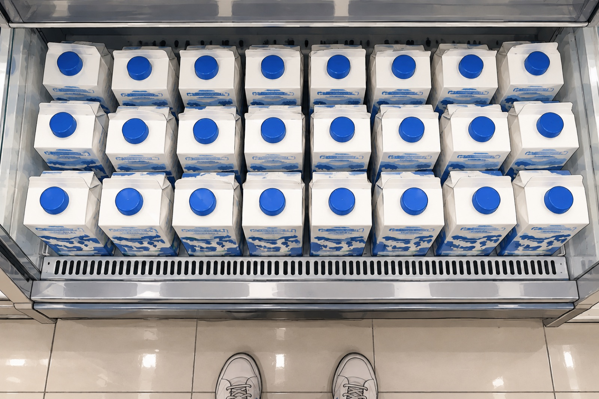
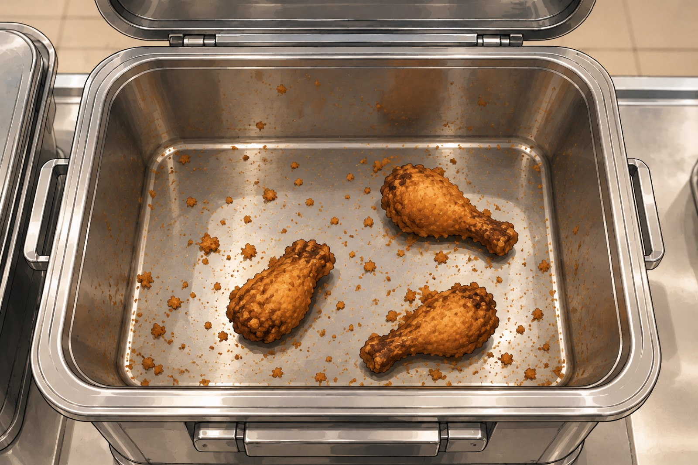
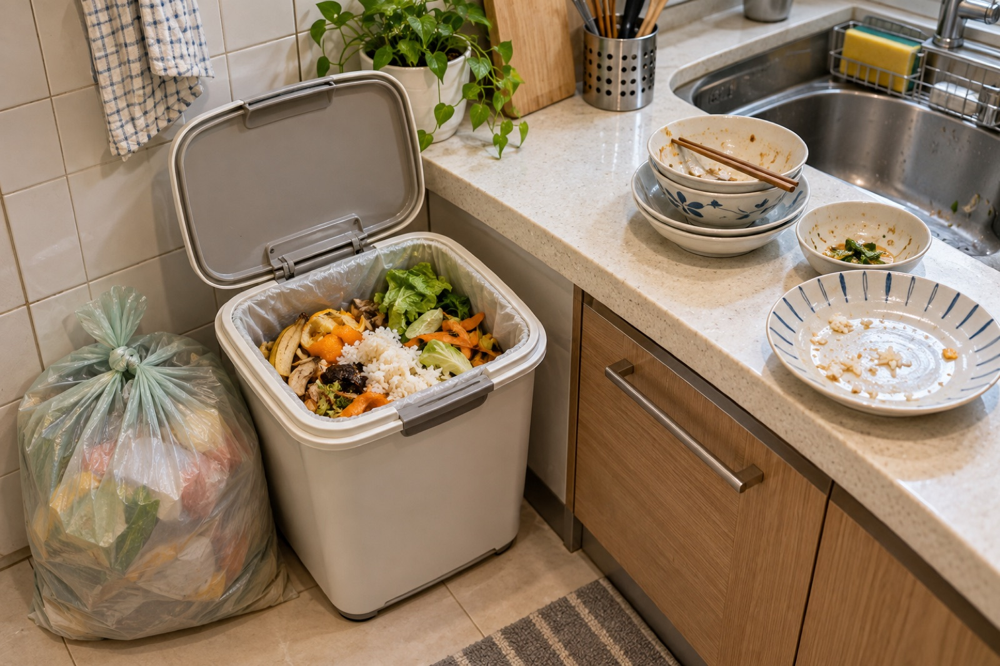

跳到投影片
和美高中・115-1 永續小食堂
剩食
議題
2026.10.29 從廚餘開始
今天的流程
- 01引起動機：三個問題
- 02影片觀賞：我們的島 1354 集
- 03剩食風暴：閱讀與重點標記
- 04小結與作業：觀察自己學校的廚餘



問題三
會幫忙丟垃圾嗎？家裡有把廚餘分開回收嗎？
有的話去哪裡；沒有的話又去哪裡？
我們的島 1354 集
搶答 1
焚化廚餘會帶來什麼問題？
搶答 2
直接掩埋會帶來什麼問題？
搶答 3
苗栗三義鄉在非洲豬瘟後，靠什麼消化多出來的廚餘？
搶答 4
養黑水虻有哪兩個挑戰？
搶答 5
生質能中心怎麼把廚餘變成電？為什麼桃園那座一直跑不滿？
搶答 6
高效堆肥比傳統堆肥快多少？
搶答 7
黑水虻、生質能、高效堆肥，三種方法都遇到的共同難題是什麼？
搶答 8
為什麼環保團體主張，焚化廚餘也要訂「落日條款」？
閱讀文章並畫重點
- 1用學校帳號、開無痕視窗，打開下方連結
- 2老師開放一段，你就讀一段
- 3選出你認為最重要的句子，按「確認送出」
- 4老師把大家的重點彙整下來，一起看
六段文章
- 一場全球性的剩食風暴
- 醜蔬果的第二次生命
- 吃到飽的兩難
- 教室裡的剩食
- 從「剩食」到「聖食」
- 不是救濟，是分享
我們從廚餘開始，發現為了每天的溫飽，其實帶給地球的負擔也不小。並且，我們有很多可以改善的空間。
廚餘處理的方法有生質能、高效堆肥、黑水虻……等，但是 2026 年年初還是以最不好的焚化、掩埋為主。
環境部認為未來三年廚餘處理量能與產生量會達到平衡，但是也有可能是廚餘回收率還不高。
除了消費端產生的廚餘，其實生產端從種植到製作食物，也都會產生剩食，其實也是廚餘的一種。
營養午餐產生的廚餘量不少
五組分工
| 組別 | 任務 |
|---|
| 觀察組 第一組 | 觀察今天（四）、星期五，填寫表單 |
| 觀察組 第二組 | 觀察星期一、二、三，填寫表單 |
| 訪談組 第一組 | 訪談自己班上的同學，四位 |
| 訪談組 第二組 | 訪談自己班上的同學，四位 |
| 訪談組 第三組 | 訪談老師 |
觀察組：每次觀察填一份表單
- 1記下今天的菜色，看哪一道剩最多、哪一道吃光
- 2估計剩多少：餐桶剩幾分、廚餘桶裝到幾分滿
- 3拍照上傳：只拍餐桶或廚餘桶，不要拍到同學的臉
訪談組：訪談同學（每組四位）
- 今天（或最近一次）的午餐，你有吃完嗎？剩下哪些？
- 剩下來（或吃光）的原因是什麼？
- 哪種菜你一定吃完？哪種菜常常剩？
- 吃不完的時候，你通常怎麼處理？
- 午餐時間夠你吃完嗎？
訪談組：訪談老師
- 您平常吃學校的營養午餐嗎？會吃完嗎？
- 您看到學生最常剩下的是什麼？
- 您覺得學生剩下來的原因是什麼？
- 您當學生的時候，午餐跟現在有什麼不一樣？
- 您覺得學校可以怎麼減少剩食？